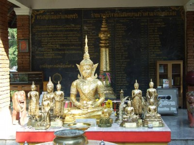
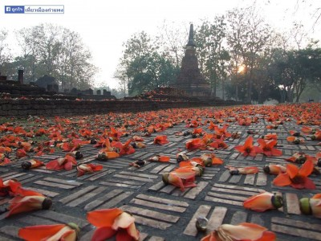
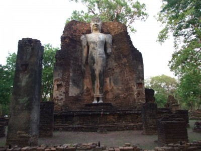

|
|
Kamphaengpeth Province
จังหวัดกำแพงเพชร
|
คำขวัญประจำจังหวัด
กรุพระเครื่อง เมืองคนแกร่ง พระแสงฯล้ำค่า ศิลาแลงใหญ่ กล้วยไข่หวาน น้ำมันลานกระบือ เลื่องลือมรดกโลก
|
ธงประจำจังหวัด
เป็นรูปสี่เหลี่ยมผืนผ้า มีพื้นสีอยู่ 3 สี คือ สีเหลือง
สีแดง
และ สีเขียวใบไม้
มีรูปตราประจำจังหวัดกำแพงเพชรอยู่ตรงกลางแถบสีแดง
|
|
ต้นไม้ประจำจังหวัด
ต้นสีเสียดแก่น
|
|
ดอกไม้ประจำจังหวัด
ดอกพิกุล
|
กำแพงเพชร เป็นจังหวัดหนึ่งที่อยู่ในภาคกลางตอนบนของประเทศไทย
มีพื้นที่ประมาณ 8,607 ตารางกิโลเมตร
มีประชากรในปี พ.ศ. 2562 จำนวน
725,867 คน ห่างจากกรุงเทพมหานครประมาณ 362 กิโลเมตร
จังหวัดที่อยู่ติดกัน
จากทิศเหนือวนตามเข็มนาฬิกา ได้แก่ จังหวัดสุโขทัย
จังหวัดพิษณุโลก จังหวัดพิจิตร จังหวัดนครสวรรค์ และจังหวัดตาก
|
ประวัติ
จังหวัดกำแพงเพชรเป็นเมืองเก่าที่นับว่ามีความสำคัญทางประวัติศาสตร์และเจริญรุ่งเรืองมาตั้งแต่สมัยทวารวดี
เป็นที่ตั้งของเมืองโบราณหลายเมือง เช่น เมืองชากังราว นครชุม ไตรตรึงษ์ เทพนคร
และเมืองคณฑี
นอกจากนี้เมืองกำแพงเพชรยังเป็นเมืองที่สองที่สมเด็จพระเจ้าตากสินมหาราชได้ครองเมือง
มีบรรดาศักดิ์เป็น
"พระยาวชิรปราการ" ต่อมาในปี พ.ศ. 2459 ได้เปลี่ยนเมืองกำแพงเพชรเป็นจังหวัดกำแพงเพชร
ตามประวัติศาสตร์ กล่าวว่า กำแพงเพชรเป็นเมืองหน้าด่านของสุโขทัยมีฐานะเป็นเมืองลูกหลวง
และมีเมืองบริวารรายล้อมอยู่เป็นจำนวนมาก เช่น ไตรตรึงษ์ เทพนคร ฯลฯ
การที่กำแพงเพชรเป็นเมืองหน้าด่านรับศึกสงครามในอดีตอยู่เสมอ
จึงเป็นเมืองยุทธศาสตร์มีหลักฐานที่แสดงให้เห็น
ว่าเป็นเมืองที่มีความสำคัญทางประวัติศาสตร์มากมาย เช่น กำแพงเมือง คูเมือง ป้อมปราการ
วัดโบราณ
มีหลักฐาน
ให้สันนิษฐานว่าเดิมเคยเป็นที่ตั้งของเมือง 2 เมือง คือ เมืองชากังราว และเมืองนครชุม
โดยเมืองนครชุมสร้างขึ้นก่อน
ตั้งอยู่ทางฝั่งตะวันตกของแม่น้ำปิง พระเจ้าเลอไท กษัตริย์องค์ที่ 4 แห่งราชวงศ์สุโขทัย
เป็นผู้สร้างขึ้นเมื่อประมาณ
พ.ศ. 1800 ต่อมาสมัยพระเจ้าลิไท กษัตริย์องค์ที่ 5
แห่งราชวงศ์สุโขทัยได้สร้างเมืองใหม่ขึ้นทางฝั่งตะวันออกของลำน้ำปิง
สมเด็จกรมพระยาดำรงราชานุภาพได้ทรงบันทึกเรื่อง กำแพงเมืองไว้ว่า
เป็นกำแพงเมืองที่เก่าแก่
มั่นคง
ยังมีความสมบูรณ์มาก และเชื่อว่าสวยงามที่สุดในประเทศไทย นอกจากนี้ ยังทรงวินิจฉัยว่า
กำแพงเพชรเป็นเมืองเดียวกับเมืองชากังราว แต่ปัจจุบันมีแนวคิดที่แตกต่างออกไป
ปัจจุบันจังหวัดกำแพงเพชรเป็นเมืองศูนย์กลางการท่องเที่ยวทางประวัติศาสตร์แห่งหนึ่ง
เพราะมีโบราณสถานเก่าแก่ซึ่งก่อสร้างด้วยศิลาแลงหลายแห่งรวมอยู่ในอุทยานประวัติศาสตร์กำแพงเพชร
ที่ได้รับการพิจารณาคัดเลือกจากองค์การศึกษาวิทยาศาสตร์และวัฒนธรรมแห่งสหประชาชาติ
(UNESCO)
ให้ขึ้นทะเบียนเป็นมรดกโลก เมื่อวันที่ 12 ธันวาคม พ.ศ. 2534
|
สถานที่ท่องเที่ยว
|
วัดพระบรมธาตุ พระอารามหลวง
วัดพระบรมธาตุนครชุมเป็นวัดเก่าแก่อยู่คู่เมืองกำแพงเพชรมาตั้งแต่อดีตจนถึงปัจจุบัน
เป็นวัดพระอารามหลวงชั้นตรี
บรรจุพระบรมสารีริกธาตุจากประเทศศรีลังกาพญาลิไททรงประดิษฐานไว้เมื่อปี
พ.ศ.1900
ประชาชนชาวกำแพงเพชรมีความศรัทธาต่อองค์พระธาตุและมีความเชื่อดังจารึกที่ว่า
"ผิผู้ใดได้ไหว้นบกระทำบูชาพระศรีรัตมหาธาตุและพระศรีมหาโพธิ์นี้ว่าไซร้
มีผลอานิสงส์พร่ำเสมอดังได้นบพระผู้เป็นเจ้า"
เป็นตำนานที่มาของงานประเพณี
"นบพระเล่นเพลง" ในวันมาฆบูชาของจังหวัดกำแพงเพชร
พระบรมธาตุนครชุม เป็นมหาเจดีย์ทรงสูงใหญ่ สวยงามไปด้วยสถาปัตยกรรมและสีทองอร่ามทั้งองค์
เสมือนดั่งเจดีย์ชเวดากองในเมืองพม่า เป็นพระบรมเจดีย์ ที่บรรจุพระบรมสารีริกธาตุ จำนวน 9
องค์
เมื่อได้เข้าไปนมัสการและบูชาแล้ว ดังได้นบกับพระพุทธเจ้าด้วยตนเอง
เป็นพระบรมธาตุเจดีย์อยู่คู่เมืองกำแพงเพชร มาตั้งแต่สมัยเป็นเมืองนครชุม
กินเวลายาวนานกว่า 600 ปี และยังคงยั่งยืนสืบต่อกันมาเป็นองค์มหาเจดีย์แห่งศรัทธา
จวบจนปัจจุบัน
Wat Phra Borommathat (Royal Monastery)
This is 3th Royal Monastery which contains the Buddha's relics
from Sri Lanka by King Litai 1900 B.E. People belive that
"Who worship the Buddha's relics as worship the Buddha"
which become "Nop Phra Tradition" on Makhabucha Day.
It is like Shwedagon pagoda in Myanmar tall, big and beautiful
with architecture. It is with Nakhon Chum for more 600 years.
|
|
|
|
 |
บ่อน้ำพุร้อนพระร่วง (บึงสาป)
ตั้งอยู่ที่หมู่ 3 ตำบลลานดอกไม้ อำเภอเมืองกำแพงเพชร ห่างจากตัวเมืองประมาณ 13 กิโลเมตร
บนทางหลวงหมายเลข 101 สายกำแพงเพชร-พรานกระต่าย
เป็นแหล่งท่องเที่ยวทางสุขภาพของจังหวัดกำแพงเพชร
เปิดให้บริการอาบน้ำแร่ แช่ฝ่าเท้า และสิ่งอำนวยความสะดวกต่างๆ แก่นักท่องเที่ยว อาทิ
จักรยานน้ำ
กิจกรรมเพื่อการพักผ่อน บ้านพัก ลานกางเต็นท์ และนวดแผนไทย ภายในบ่อน้ำพุร้อน
บริเวณทางด้านหน้ามีศาลพระร่วงเจ้า
เพื่อให้นักท่องเที่ยวได้สักการะบูชาเพื่อความเป็นศิริมงคล
รายละเอียดติดต่อ : ฝ่ายประชาสัมพันธ์และการท่องเที่ยว โทร 055-717275 /
บ่อน้ำพุร้อนพระร่วง
โทร
055-701379 , 086-4033537
Phra Ruang Hot Spring (Bung Saab)
It is locate at Mu 3, Tambon Lan Dok Mai, Amphoe Mueang Kamphaeng Phet, 13 km from
Kamphaeng
Phet,
on Highway No. 101. It is the health tourism of Kamphaeng Phet which is open for a
mineral
bath
and
foot soak. There are facilities for the tourists such as-water bike, leisure activities,
lodge
tent
campsite and Thai massage in the hot spring. There is Phra Ruang shrinn in the front for
people
to
worship.
For more information : Information and tourism Tel. 055-717275 / Phra Ruang Hot Spring
Tel.
055-701379 , 086-4033537
|
|
|
|
วัดปราสาท (เมืองโบราณบ้านโคน)
ตั้งอยู่ที่หมู่ 2 บ้านโคนใต้ ตำบลคณฑีโดยห่างจากตัวเมืองกำแพงเพชรประมาณ 22 กิโลเมตร
สถานที่ที่สำคัญภายในวัดประกอบด้วยวิหารประดิษฐานพระพุทธรูป " หลวงพ่อโต"
เป็นพระพุทธรูปองค์ใหญ่ตั้งเป็นประธาน สร้างในสมัยสุโขทัย
มีอาคารพิพิธภัณฑ์ซึ่งเก็บรวบรวมพระพุทธรูปต่างๆ
สมัยสุโขทัย อยุธยา ได้แก่ พระพุทธลีลา พระพุทธรูปสมัยสุโขทัยอายุเก่าแก่กว่า 700 ปี
มีพุทธลักษณะที่งดงามที่สุดในโลก มีเพียง 2 องค์ คือที่พิพิธภัณฑ์สุโขทัยและพิพิธภัณฑ์วัดปราสาท
เปิดให้เข้าชมตั้งแต่เวลา 09.00-16.00 น. ทุกวันไม่เว้นวันหยุด
รายละเอียดเพิ่มเติมติดต่อ : อบต.คณฑี โทร 055-740020
Wat Prasat (BaanKon ancient town)
It is locate at Moo 2 Tambon Khonthi, 22 km. from Mueang Kamphaeng Phet. Inside it, there is
a
big
Buddha image "Luang Pho To" Which built in Sukhothai era places in Buddha image hall and
there
are
many
Buddha images in the museum building. They are over 700 years old and the most beautiful
Buddha
images
in the world.
|
| |
|
|
ศาลหลักเมืองจังหวัดกำแพงเพชร
ตั้งอยู่บริเวณวัดพระแก้ว มีความหมายว่า เป็นเมืองที่มีนามอันเป็นมงคล
ซึ่งหมายถึงความมั่นคงประดุจเมืองที่มีปราการทำด้วยเพชร ศาลหลักเมืองจังหวัดกำแพงเพชร
จึงเป็นสิ่งที่พ้องกับความมั่นคง ไม่หวั่นไหว จึงเหมาะสำหรับขอพรเกี่ยวกับที่อยู่อาศัย อาชีพ ของหาย
ของรัก
ฯลฯ ชาวเมืองกำแพงเพชรและประชาชนทั่วไปจะให้ความนับถือเลื่อมใสศรัทธาอย่างมาก
และเป็นที่กล่าวขานถึงความศักดิ์สิทธิ์
ศาลหลักเมืองจังหวัดกำแพงเพชร เป็นศาลที่เก่าแก่มานานกว่า ๗๐๐ ปี เชื่อกันว่าพระเจ้าวรมันต์(เหม่)
ผู้เรืองอำนาจเป็นผู้ก่อสร้างขึ้น
ทำด้วยศิลาแลงรูปกลม ยาวประมาณ ๒ เมตร ผังโผล่พื้นมาประมาณ ๑
เมตร
มีรูปเศียรเทพารักษ์อยู่บนยอดศิลาแลง
ในรัชสมัยพระบาทสมเด็จพระจุลจอมเกล้าเจ้าอยู่หัว
หลังคาศาลได้พังลงมาทับเสาหลักเมืองและเศียรเทพารักษ์ หลังจากนั้นก็อยู่ในสภาพรกร้างมานาน
และเมื่อปี
พ.ศ.๒๕๒๗
สมเด็จพระบรมโอรสาธิราช สยามมกุฎราชกุมารเสด็จพระราชดำเนินแทนพระองค์ ประกอบพิธีเจิมเสาหลักเมือง
เมื่อวันที่ ๑๖ เมษายน พ.ศ.๒๕๒๗
และมีพิธีเชิญเสาหลักเมืองและเศียรเทพารักษ์ขึ้นศาล
เมื่อวันที่ ๕
พฤษภาคม
๒๕๒๗ ต่อมาช่างผู้เชี่ยวชาญจากสำนักช่างสิบหมู่ กรมศิลปากร
กระทรวงวัฒนธรรมได้สำรวจความเสียหายเสาหลักเมืองเดิม
และนำไปบูรณเพื่ออนุรักษ์เสาหลักเมืองเดิมพร้อมกันนี้ได้จัดทำเสาหลักเมืองจำลองใหม่
โดยทำจากไม้สักทองมีขนาดความสูงจากพื้นเสา ๒.๒๙ เมตร
ความกว้างของฐานขนาด ๖๔ เซนติเมตร
โดยได้อัญเชิญเสาหลักเมืองจำลองที่ได้ผ่านการทำพิธีจากกรมศิลปากรมาวางไว้เพื่อให้ประชาชนได้สักการบูชา
ณ
ศาลารายชื่อผู้จัดสร้างศาลหลักเมือง เมื่อวันที่ ๒๖ มีนาคม ๒๕๕๑ การสังเวยเจ้าพ่อหลักเมืองกำแพงเพชร
ในวันที่ ๑๕ เมษายน ของทุกปี เรียกว่า
“วันพญาวัน”
ซึ่งประชาชนจำนวนมากจะมาชุมนุมพร้อมกันที่ศาลหลักเมืองกำแพงเพชร
มักเรียกประชาชนที่มาร่วมกันว่า
“ลูกช้าง”
ทุกคนที่มาชุมนุมกันจะบนบานศาลกล่าวขอพรต่างๆ
และพวกที่ยังไม่ได้แก้บนจะแก้บนให้เสร็จสิ้นในวันนี้
นอกจากนี้ พราหมณ์จะทำพิธีบวงสรวงประจำปี
เสร็จแล้วทำพิธีสรงน้ำเจ้าพ่อหลักเมืองและนิมนต์พระสงฆ์มาถวายภัตราหารเพลด้วย
ศาลหลักเมืองกำแพงเพชร
หรือ
ศาลเจ้าพ่อหลักเมืองกำแพงเพชร ตั้งอยู่ที่ บริเวณวัดพระแก้ว ปากทางเข้าโรงเรียนกำแพงเพชรพิทยาคม
ถนนสายกำแพงเพชร-สุโขทัย ผ่านหน้าศาล
ชาวเมืองกำแพงเพชรและประชาชนทั่วไปให้ความนับถือเลื่อมใสศรัทธาอย่างมากและเป็นที่กล่าวขานถึงความศักดิ์สิทธิ์
ปัจจุบันขึ้นทะเบียนเป็นศาลเจ้าตามกฎเสนาบดีว่าด้วยที่กุศลสถานชนิดศาลเจ้า พ.ศ.๒๔๖๓ เมื่อวันที่ ๒๙
พฤษภาคม
๒๕๒๘ และอยู่ในความดูแลของเทศบาลเมืองกำแพงเพชร
The City Pillar Shrine
It is Wat Phra Kaeo area. It signifiles the stability of town like the town wall. It is highly
respected
by Kamphaeng Phet residents and talked to be holy.
|
|
|
 |
วัดพระสิงห์
อยู่ถัดจากวัดพระสี่อิริยาบถไปทางทิศเหนือประมาณ 100 เมตร สันนิษฐานว่าใช้เวลาสร้างถึง 2 สมัย
คือสมัยสุโขทัยและสมัยอยุธยา
ผังรวมของวัดแบ่งเขตพุทธาวาสให้อยู่ในกลุ่มกลางล้อมรอบด้วยเขตสังฆาวาสหรือกุฏิสงฆ์
โดยมีพระเจดีย์ฐานสี่เหลี่ยม มีซุ้มทั้ง 4 ด้านเป็นประธาน ด้านหน้าเป็นพระอุโบสถขนาดใหญ่
ยกฐานประทักษิณสูง
บนฐานประทักษิณนี้ ประดิษฐานพัทธสีมาไว้ทั้งแปดทิศ มุขด้านหน้าของฐานประทักษิณ มีรูปสิงห์ นาค
ประดับ
Wat Phra Sing
It is believed ot have been constructe during both the Sukhothai and Ayutthaya periods. With
laterite
walls, it has a square-shaped principal Chedi with arches on four si des. In front of the Ubosot
are
ornamental lion and Naga Figurines.
|
|
|
|
วัดวังพระธาตุ(เมืองไตรตรึงษ์)
ตั้งอยู่ทางทิศตะวันออกของเมืองไตรตรึงษ์ มีวังแม่น้ำปิงขนาดใหญ่ใกล้บริเวณวัด คนในท้องถิ่นเรียกว่า
"วัดวังพระธาตุ"
ภายในมีโบราณสถานที่สำคัญคือ เจดีย์พระประธานทรงข้าวบิณฑ์ (ทรงดอกบัว)
ศิลปะสุโขทัย
ภายในบรรจุพระบรมสารีริกธาตุสภาพค่อนข้างสมบูรณ์
โดยเห็นรูปทรงของเจดีย์ได้อย่างครบถ้วน
เป็นเจดีย์ทรงดอกบัวที่นับว่าใหญ่ที่สุดในเมืองกำแพงเพชร
ด้านหน้าพระเจดีย์มีพระวิหารฐานก่อด้วยอิฐ
มีพระประธานประดิษฐานบนฐานชุกชี ด้านข้างอุโบสถมีศาลท้าวแสนปม
ซึ่งมีเรื่องราวในตำนานพื้นบ้านโบราณว่าเป็นผู้ก่อตั้งเมืองเทพนคร
Wat Wang Phra That (Muang Trai Trung)
It is located to the east of Muang Trai Trung. There is a big expanse of water of the Ping River
near
the temple. Inside the temple, there is the pagoda (Sukhothai Art) where contains the Buddha 's
relics.
It is the biggest pagoda in Kamphaeng Phet. In front of the pagoda is the Buddha image hall
which
make
of brick and Tao San Phom shrine is beside.
|
|
|
|
น้ำตกเต่าดำ
เป็นน้ำตกขนาดใหญ่ มี 3 ชั้น แต่ละชั้นมีความสูงมากกว่า 200 เมตร โดยเฉพาะชั้นที่ 3 มีความสูงประมาณ
270
เมตร
มีความสูงรวมกันประมาณ 600 เมตร ชั้นที่ 3 ทิ้งตัวในแนวตั้งฉากสวยงามและยิ่งใหญ่มาก
อยู่ห่างจากที่ทำการอุทยานแห่งชาติคลองวังเจ้าประมาณ 34 กิโลเมตร
โดยไปทางบ้านโละโคะจนสุดทางที่ป่าไผ่แล้วเดินลงเขาชันไปอีก 500 เมตร จะถึงน้ำตก
ในการไปเที่ยวน้ำตกเต่าดำ
หากไปช่วงฤดูฝน ควรใช้รถยนต์ที่ขับเคลื่อน 4 ล้อ เท่านั้น
Tao Dam waterfall
It is a big waterfall with 3 high levels-each level is high over 200 meters.
Especially, the
third
level
is high about 270 meters that makes it great and wonderful.
It is about 600 total high. It
is
far
form
the national park about 34 km.
by using Baan Lo Ko trail until Pha Pai and walk down
the
mountain to the
waterfall about 500 meters.
In rainy season, you should travel by 4 wheel drive vehicle
only.
|
|
|
|
วัดพระธาตุ
เป็นวัดใหญ่รองจากวัดพระแก้ว
ตั้งอยู่ในกำแพงเมืองถัดจากวัดพระแก้วไปทางทิศตะวันออกของวัดพระแก้ว
มีเจย์ดีเป็นฐานก่อด้วยศิลาแลงปนอิฐ โดยรอบเจดีย์และวิหาร มีกำแพงศิลาแลง มีประตูสี่ด้าน
ลักษณะการก่อสร้างเป็นแบบศิลปะกำแพงเพชร
Wat Phra That
It is the second in size to Wat Phra Kaeo locate within the city wall, just east of Wat Phra
Kaeo.
Here the principal Chedi is built from mixture of laterite and bricks with a wide square base.
The
style
is of Kamphaeng Phet architecture.
|
|
 |
|
วัดพระแก้ว
ตั้งอยู่ใจกลางเมืองกำแพงเพชร
เป็นส่วนหนึ่งของกลุ่มโบราณสถานมรดกโลกในอุทยานประวัติศาสตร์กำแพงเพชร
เป็นวัดที่มีความสำคัญอยู่ติดกับบริเวณวัง เช่นเดียวกับวัดพระศรีสรรเพชญ์จังหวัดพระนครศรีอยุธยา
หรือวัดมหาธาตุจังหวัดสุโขทัย
ภายในบริเวณวัดประกอบด้วยเจดีย์ประธานที่ฐานมีสิงห์ล้อม
เจดีย์ทรงกลมที่ฐานมีช้างรอบ วิหาร มณฑป อุโบสถ และเจดีย์ราย
ทั้งหมดล้อมรอบด้วยกำแพงศิลาแลงเป็นแท่งๆ
แผนผังของวัดเป็รูปสีเหลี่ยมผืนผ้าขนานไปกับกำแพงเมือง
Wat Phra Kaew
This important monastery is situated in the heart of Kamphaeng Phet City.
It is a large
royal
temple
in
town centra near a site believed to have been a palace.
The temple itself was used on
important
city
events and had no monks in residence.
Major features include the principal Chedi with
lion-adorned
base
and a round Chedi with elephant-adorned base.
there are also other Chedis of different bases
and
remains
of several chapels.
Its boundary is market off by laterite walls.
|
|
|
|
น้ำตกคลองน้ำไหล
อยู่ห่างจากที่ทำการอุทยานประมาณ 25 กิโลเมตร จากเส้นทางสายอุ้มผาง-คลองลาน
ก่อนถึงอำเภอคลองลาน
มีทางแยกด้านขวาเข้าสู่น้ำตก เรียกว่า "น้ำตกปางควาย" ระยะทาง 10.5 กิโลเมตร ถึงน้ำตกคลองน้ำไหล
ซึ่งเป็นน้ำตกขนาดกลาง สายน้ำไหลลดหลั่นกันลงมา มีทั้งหมด 9 ชั้น
แต่ละชั้นมีแอ่งน้ำและความสูงต่างกัน
ลานหินที่นี่กว้างมากเป็นสีนิลวาววับเมื่อตัดกับสายน้ำ ลำธารสวยด้วยโขดหิน ในชั้นที่ 3
น้ำตกจะแยกเป็น 2
สายดูสวยงามทางฝั่งขวาไหลลงสู่แอ่งน้ำ กว้างประมาณ 3 เมตร
เหมาะสำหรับการเล่นน้ำตก
มีการจัดสถานที่กางเต็นท์พักแรมไว้บริการ และมีเส้นทางศึกษาธรรมชาติบริเวณน้ำตก ระยะทางประมาณ 1
กิโลเมตร
Khlong Nam Lai Waterfall
t is about 25 km. from the office. There is a crossroad on the right before Khlong Lan district
that
lead to
the entrance to Nam tok Pang Kwai.
It is far from Khlong Nam Lai Waterfall 10.5 km. It is
the
middle
size waterfall.
There are 9 levels and there is a pool in each level with wide black stone
filed.
On the
third level, the waterfall separates into 2 which are very beautiful. suitable for swimming.
There
are
the area for camping and the trail for natural study on the waterfall area about 1 km.
|
|
|
|
น้ำตกคลองลาน
เกิดจากเทือกเขาขุนคลองลาน มียอดสูง 1,439 เมตร จากระดับน้ำทะเล เหนือหน้าผาน้ำตกเป็นที่ราบกว้าง
ในฤดูฝนสายน้ำจะไหลจากลำห้วยต่างๆ ประมาณ 5 สาย ลงสู่แอ่งน้ำกลางหุบเขา
เกิดเป็นวังลึกและลำน้ำยาวประมาณ
3
กิโลเมตร
แล้วไหลผ่านหน้าผาลงมาเป็นน้ำตกคลองลาน สูง 100 เมตร กว้างประมาณ 40 เมตร
บริเวณใต้น้ำตกเป็นแอ่งน้ำขนาดใหญ่
ซึ่งสามารถลงเล่นน้ำได้ อยู่ห่างจากที่ทำการอุทยานแห่งชาติ 800เมตร
Khlong Lan waterfall
It is from Khun Khlong Lan mountain range with the highest peak at 1,439 metres (4,721 ft) above
sea
level.
The waterfalls include several different streams of water that cascade over a 40
metre-wide
cliff
into
a collection of pools suitable for swimming; it's possible to swim right up to thefalls and let
the
water tumble down on top of you.
It is 800 meters far from the national park office.
|
|
|
|
วัดพระสี่อิริยาบถ อุทยานประวัติศาสตร์กำแพงเพชร
หรือ วัดพระยืน วัดที่มีบ่อน้ำและมีที่อาบน้ำอยู่หน้าวัด เช่นเดียวกับวัดพระนอน
กำแพงเป็นศิลาแลงปักล้อมทั้งสี่ด้าน มีพระพุทธรูปสี่อิริยาบถ ได้แก่ นอน ลีลา ยืน และนั่ง
โดยพระพุทธรูปยืน
ยังคงมีสภาพสมบูรณ์ที่สุด
Wat Phra Si Ariyabot
This monastery is locally called "Wat Phra Yuen"
Walls on the four sides are of laterite
materials
with
an entrancealso made of laterite.
A Mondop structure houses Buddha statues in four
postures-walking,
sitting,standing and reclining.
Today only the statue in the standing posture still
remains.
|
|
|
 |
วัดช้างรอบ
เป็นวัดที่สร้างบนยอดเนิน มีเจดีย์ทรงลังกา ซึ่งยอดหักพังหมดแล้ว มีบันไดทางขึ้นทั้งสี่ด้าน
ที่ชั้นฐานลานประทักษิณประดับด้วยช้างทรงเครื่องครึ่งตัว จำนวน 68 เชือก
ระหว่างช้างแต่ละเชือกมีภาพปูนปั้นรูปลายพรรณพฤกษาในพระพุทธศาสนา เช่น ต้นโพธิ์ และต้นสาละ เป็นต้น
Wat Chang Rob
It is big monastery on a hill, having a large pagod a located in center of the courtyard.
The
padoda
is
supported by 68 half-bodies elephants (head and forelegs).
This monastery has sand stone
walls
and
architecture in Buddhism.
|
|
|
 |
สำนักงานจังหวัดกำแพงเพชร ศาลากลางจังหวัดกำแพงเพชร อำเภอเมืองกำแพงเพชร จังหวัดกำแพงเพชร 62000
ติดต่อ str108@hotmail.com
 หรือ kamphaengphet@moi.go.th
หรือ kamphaengphet@moi.go.th
โทร. 055-705004-7 โทรสาร 055-705099
จัดทำโดย นายกาญจน์สธน ปรีดา 6219410028 SAU IoT...( ＿ ＿)ノ (￣▽￣)""
|